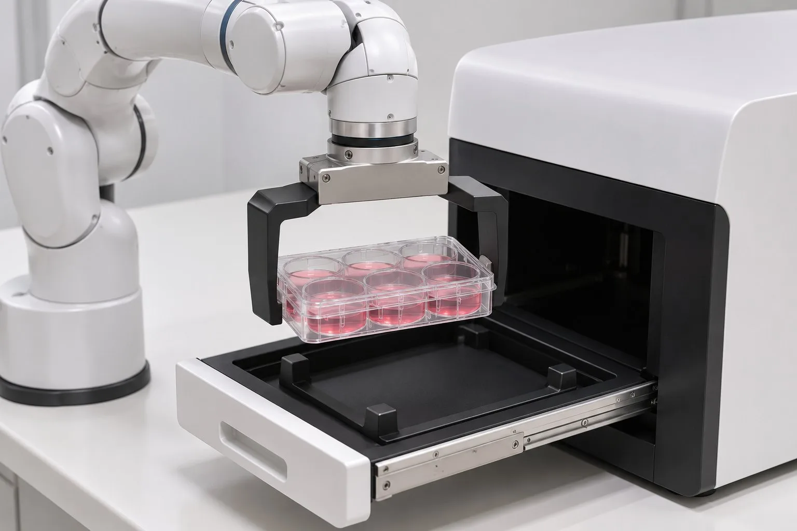

细胞传代薄切片 01：开培养箱取板，送到观察站
在黑灯实验室里，用真实物理完整跑通一个工艺步骤，并借此把"建模到仿真"的流程一个阶段一个阶段地走通、固定下来。
01目标与不做什么
场景只是验收载体，真正交付的是流程：阶段日志、经验记录，以及最后提炼出的 skill。
目标
电动培养箱开门 → Panda 从第 3 层隔板取出带盖的六孔板 → 放进观察站伸出的抽屉，确认板被托住后再松爪 → Panda 回到停靠位 → 抽屉收回，培养箱关门。
全程使用真实物理（MuJoCo），渲染为正常照明的成片，不加速、不剪辑。
不做什么
- 移液、开盖、液体、离心、计数、分板
- Panda 推拉门（门和抽屉由执行器驱动）
- 吸头装卸、旋盖等已知 BLOCKED / FAIL 的难点
- 黑灯氛围灯光、加速、剪辑
- Newton / UE5 / Isaac、导轨或 AMR、商用许可审查
- 夹爪：定制外偏置宽指，不用原装手指。Panda 原装夹爪行程只有 80 mm，而六孔板短边 85.5 mm、长边 127.8 mm，原装手指夹不住。做法是在两根原装手指上各加一段外偏置指，使 0–80 mm 的行程对应约 110–190 mm 的开口，夹住板的两个短端。P3 当年用的也是 ±72 mm 的定制夹爪。见 R1。
- 取板位置：第 3 层（z≈0.555 m），板靠门放（板心 y≈−0.18 m）。沿用 P3 布局时，第 1 层够不到；第 2 层要把 TCP 加长到 0.16 m 才够得到；板放得再深，任何一层都够不到。见 R2。
- 新培养箱外形：0.70 × 0.70 × 0.95 m。与 P1-B 同一量级，方便对比。真实的 Heracell VIOS 160i 约为 0.64 × 0.88 × 0.90 m，进深更大，所以这个尺寸属于设计假设。
02场景效果图
以下都是 AI 概念图（gpt-image-2.5-flare），只用来对齐风格，不是工程图。尺寸和机构以第 03、04 节为准。


03布局俯视图
沿用 P3 的坐标系（单位 m，Z 轴朝上）。培养箱正面朝 −Y；观察站旋转 180° 后正面朝 +Y，抽屉向 Panda 方向伸出。
布局要点
- 取板时手指沿 X 方向张合，从 −Y 侧水平伸入；放板时从上往下放，手指同样沿 X 方向。
- 新培养箱的隔板高度按可达性来设计，目标是让第 3 层落在可达范围的中段，不必照搬 P1-B 的层高。
- 建模完成后允许微调布局，每次调整的原因都记入阶段日志。
可达性初筛（运动学 IK，不计碰撞）
| 目标位姿 | TCP 0.103 m（原装） | TCP 0.16 m |
|---|---|---|
| 第 1 层 z=0.315 | ❌ | ❌ |
| 第 2 层 z=0.435 | ❌ | ✅ |
| 第 3 层 z=0.555 | ✅ | ✅ |
| 第 4 层 z=0.675 | ✅ | ✅ |
| 任一层，板心更深 y=−0.065 | ❌ | ❌（第 4 层差 33 mm） |
| 门外预备位 / 抽屉放板位 | ✅ | ✅ |
脚本与结果：analysis/reach_screen.py，结果 JSON 在同一目录。只算了运动学，没有算碰撞和力矩；实际能否到位以仿真阶段为准。
04设备清单
状态指该资产在本项目中当前的验证情况；难度等级见 GLOSSARY。
05工艺步骤
所有工艺步骤都用真实物理，没有理想化或符号化的步骤。唯一的理想化是机器人底座的支撑（R6）。
不用 weld、mocap 或跟随约束伪造支撑。另外要跑负例：撤掉支撑后板必须掉落；过插时必须检测到碰撞。
06流程阶段
只设两个审批点。审批点②之后由 agent 全程自主推进。
每个阶段都要过验证门（PASS / FAIL / NOT_RUN / BLOCKED / IDEALIZED，附证据），并写阶段日志（只记实测数据）和经验记录。出现失败先复盘、调整做法再继续；只有完全卡死时才报告。
07风险与难度
最高难度 L3（抓取与接触），没有 L4 / L5。最可能卡住的是 R1 + R3：偏置宽指能否稳稳夹住板，并在不碰到隔板的前提下带着盖子退出。
| # | 风险 | 难度 | 证据 / 历史 | 对策 |
|---|---|---|---|---|
| R1 | 原装夹爪夹不住板：行程 80 mm，板为 85.5 × 127.8 mm | L3 | Franka Hand 规格（外部参考）；P3 用的是 ±72 mm 定制夹爪 | 定制外偏置宽指，作为新建部件进入建模阶段 |
| R2 | 可达性：沿用 P3 布局时，低层和更深位置的板够不到 | L3 | 本项目 IK 初筛（03 节） | 选第 3 层，板心 y≈−0.18；隔板高度按可达性设计 |
| R3 | 隔板间距约 120 mm，水平伸入时可能碰到上一层；搬运时盖子可能滑动 | L3 | P3 有盖子 xy / z 偏差指标；本项目还没有 | 仿真门限加入"禁止接触对"和盖子位移上限，在 plan 阶段冻结 |
| R4 | 被动自由体漂移超限 | L1 | P3 r2 漂移 0.225 mm，超过 0.1 mm 门限，FAIL；v3 加入 21 s 预静置后降到 0.004 mm | 工艺步骤 0 做预静置，稳定窗口检查通过后才开始计时 |
| R5 | "支撑后释放"误判 | L3 | transfer_negative_audit_v10：支撑力为 0 N 时，在 86.781 s 正确触发失败 | 松爪前检测抽屉对板的支撑反力；用 no_support 负例验证 |
| R6 | 底座只有 2 µm 间隙，接触面积为 0，机器人固定在世界坐标系 | L1 | robot_pedestal_lumen_v02 README | 接受，标为 IDEALIZED 并公开说明 |
| R7 | 渲染成本：不加速，帧数 = 仿真时长 × 30 | L1 | P3 用 CPU 渲染，实测 89–192 s/帧；OptiX 吞吐量尚未实测 | 先测吞吐量；成本过高时降低采样、加强降噪，仍不加速 |
| R8 | Blender 5.4 是 Alpha 版 | L1 | 冒烟测试 PASS；Alpha 版 API 可能变动 | 出现异常就记入阶段日志，必要时改用 5.3 正式版 |
| R9 | P3 v3 无法从归档复现 | L1 | REUSE_INVENTORY：缺场景 assets 和轨迹 npz | 只作为数据对照（步数、门限、结果） |
08外部参考
只引用文字和数据，不下载、不嵌入外部图片。"可作资产"表示许可允许直接用于交付物。